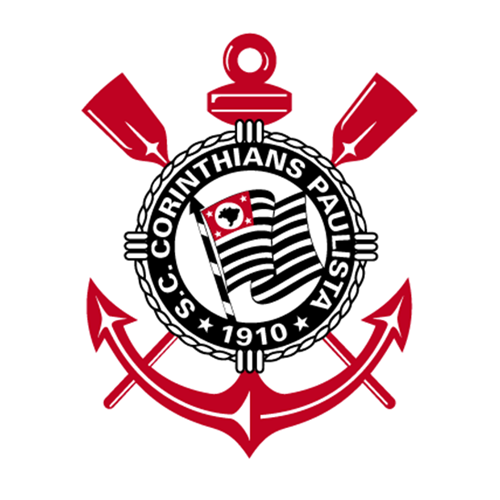

HISTÓRIA
Dois clubes, um clássico.

Palmeiras
Em 26 de agosto de 1914, imigrantes italianos fundaram o Palestra Italia em São Paulo. Em 1942, o clube adotou o nome Sociedade Esportiva Palmeiras. O verde continuou no uniforme e no apelido que a torcida canta nas arquibancadas, Verdão.

Corinthians
O Sport Club Corinthians Paulista nasceu em 1º de setembro de 1910, no bairro do Bom Retiro, em São Paulo. Fundado por um grupo de trabalhadores, o clube ganhou uma torcida conhecida como Fiel. O timão e a âncora do escudo lembram a sua ligação com o remo.
O primeiro Derby
Em 6 de maio de 1917, os times se enfrentaram pela primeira vez, no Parque Antarctica. Caetano marcou os três gols da vitória do Palestra Italia por 3 a 0. O confronto passou a ser conhecido como Derby Paulista.
Consultar o registro do clássico ↗